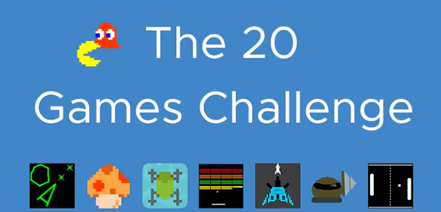
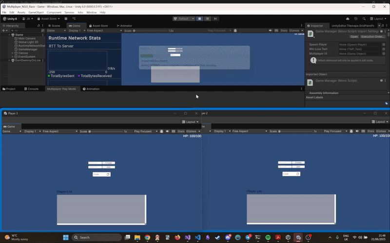

Game Demos

20 Games Challenge
My rendition of the games covered in the 20 Games Challenge:
The goal of the 20 Games
Challenge is to learn game development in 20 games or less. You don’t have to complete all
20 games, but I would recommend finishing at least 10. You should also set some final goal
for yourself; like creating an RTS or a full FPS. You know why you want to make games, so
let the destination guide your unique journey.

Knock Knock
"Knock Knock" is a short psychological horror prototype where you're stuck in your apartment with strangers knocking at your door. Some are safe, some aren’t. You use a peephole and voice lines to figure out who’s who. I even got my friends to help voice it!
- Randomised characters (safe vs. mimic)
- Audio-based anxiety distortion system
- Peephole interaction + proximity-based decisions

Slimey
A physics-based 2D grapple demo where you swing around, build up spin, and boost through walls. It’s all about momentum and feel.
- Rope-based grapple system with dynamic length
- Spin-charged dash mechanic for smashing breakables
- Camera shake, trails, and audio for feedback

2D Multiplayer Prototype (WIP)
A sandbox for learning Unity multiplayer via NGO. Built from scratch to understand server authority, player ownership, and multiplayer UI syncing. Still very rough, but improving each iteration.
- Server-authoritative damage, spawning, and player input
- NetworkVariables for real-time health syncing
- Prototype rematch flow, lobby testing, and UI ownership

Lights Out
A short psychological horror prototype built in 3 days. You must keep the lights on to survive, but the longer you last, the more the room changes…
- Randomized light switch and event system
- Timer-based blackout and fail state logic
- Audio layering and flicker effects for tension

Rizztaurant
A visual novel set in a chaotic restaurant where your choices shape the narrative. Built as a duo in Ren'Py with custom art, writing, and UI, a comedic exploration of branching dialogue and expressive character design.
- Persistent branching dialogue built with Python and Ren'Py
- Hand-drawn characters, backgrounds, and UI
- Custom transitions, animations, and timed comedic beats